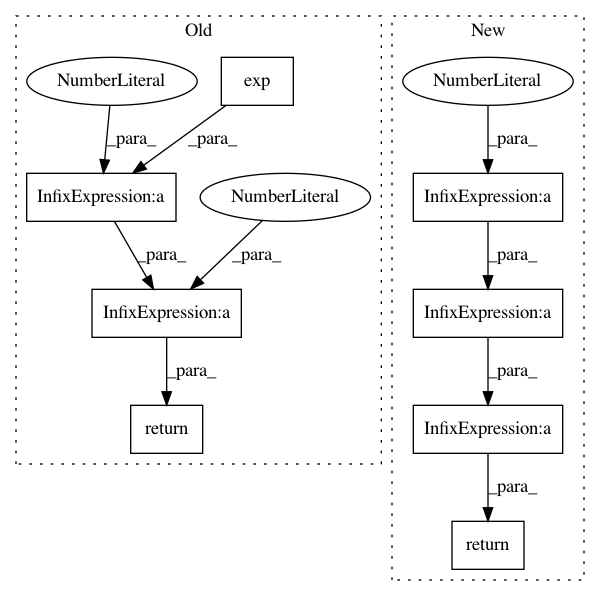

45a03ac258234ba49c0a43d46ae022493190591e,torch_geometric/nn/models/autoencoder.py,VGAE,kl_loss,#VGAE#Any#Any#,168
Before Change
torch.nn.init.xavier_uniform(self.z_var.weight)
def kl_loss(self, mean, logvar):
loss = torch.mean(0.5 * torch.sum(
torch.exp(logvar) + mean**2 - 1. - logvar, 1))
print(loss)
return loss
def reconstruction_loss(self, adj, edge_index, neg_adj_mask):
row, col = edge_index
loss = -torch.log(torch.sigmoid(adj[row, col])).mean()
After Change
return mu + torch.randn_like(logvar) * torch.exp(0.5 * logvar)
def kl_loss(self, mu, logvar):
return -0.5 * torch.mean(1 + logvar - mu.pow(2) - logvar.exp())
def loss(self, mu, logvar, pos_edge_index, neg_adj_mask):
z = self.sample(mu, logvar)
recon_loss = self.reconstruction_loss(z, pos_edge_index, neg_adj_mask)
In pattern: SUPERPATTERN
Frequency: 4
Non-data size: 8
Instances
Project Name: rusty1s/pytorch_geometric
Commit Name: 45a03ac258234ba49c0a43d46ae022493190591e
Time: 2019-03-26
Author: matthias.fey@tu-dortmund.de
File Name: torch_geometric/nn/models/autoencoder.py
Class Name: VGAE
Method Name: kl_loss
Project Name: scipy/scipy
Commit Name: c927951ccd7a3543ed9005a92ee04269b397c3a8
Time: 2015-07-27
Author: johannes@balle.io
File Name: scipy/stats/_continuous_distns.py
Class Name: chi_gen
Method Name: _pdf
Project Name: jonathf/chaospy
Commit Name: 0b10d5eaa6abb77198e8eb025fea759c4629bca6
Time: 2020-10-21
Author: jonathf@users.noreply.github.com
File Name: chaospy/distributions/collection/wald.py
Class Name: wald
Method Name: _upper
Project Name: reinforceio/tensorforce
Commit Name: ccbe291ec9859698a57147b1033d503a7739dfa9
Time: 2017-08-03
Author: aok25@cl.cam.ac.uk
File Name: tensorforce/core/distributions/gaussian.py
Class Name: Gaussian
Method Name: kl_divergence